Calibrating Interval Estimates with Binary Observations
Sampling and Calibration Review
A Polling Nightmare
Before the Election
$$ \newcommand{X}{} \newcommand{Y}{}
$$
Your Sample
\[ \begin{array}{r|rrrr|r} i & 1 & 2 & \dots & 625 & \bar{Y}_{625} \\ Y_i & 1 & 1 & \dots & 0 & 0.72 \\ \end{array} \]
The Population
\[ \color{lightgray} \begin{array}{r|rrrrrr|r} j & 1 & 2 & 3 & 4 & \dots & 7.23M & \bar{y}_{7.23M} \\ y_{j} & 1 & 1 & 1 & 0 & \dots & 1 & 0.70 \\ \end{array} \]
- You want to estimate the proportion of all registered voters — the population — who will vote.
- To do this, you use the proportion of polled voters — your sample — who said they would.
- You’re probably not going to match the population proportion exactly …
- … so you report an interval estimate—a range of values we claim the population proportion is in.
- You’re know you’re not going to be right 100% of the time you make with claims like this …
- … so you state a nominal coverage probability—how often you’re right about claims like this.1
- Without thinking too hard about it, you …
- … report, as your interval, your sample proportion (72%) ± 1%. Because it sounds good.
- … and say your coverage probability is 95%. Because that’s what everybody else says.
After the Election
Your Sample
\[ \begin{array}{r|rrrr|r} i & 1 & 2 & \dots & 625 & \bar{Y}_{625} \\ Y_i & 1 & 1 & \dots & 0 & 0.72 \\ \end{array} \]
The Population
\[ \begin{array}{r|rrrrrr|r} j & 1 & 2 & 3 & 4 & \dots & 7.23M & \bar{y}_{7.23M} \\ y_{j} & 1 & 1 & 1 & 0 & \dots & 1 & 0.70 \\ \end{array} \]
- When the election occurs, we get to see who turns out to vote.
- 5.05M people, or roughly 70% of registered voters, actually vote.
- You — and future employers — can see how well you did. And how well everybody else did.
- Your interval missed the target. It doesn’t contain the turnout proportion.
- Your point estimate is only off by 2%. But you overstated your precision.
- Now you’re kicking yourself. You’d briefly considered saying ± 3% or ± 4%.
- That would’ve done it. But that didn’t sound as good, so you went for ± 1%.
- You hope you’re not the only one who missed. So you check out the competition.
The Competition
\[ \begin{array}{r|rr|rr|r|rr|r} \text{call} & 1 & & 2 & & \dots & 625 & & \\ \text{poll} & J_1 & Y_1 & J_2 & Y_2 & \dots & J_{625} & Y_{625} & \overline{Y}_{625} \\ \hline \color{\]
- It turns out that everyone got their point estimate exactly like you did.
- Each of them rolled their 7.23M-sided die 625 times.
- And after making their 625 calls, they reported their sample proportion.
- You’re not the only one who missed, but you’re part of a pretty small club.
- 5% of the other polls got it wrong.
- But you are the only one who claimed they’d get within 1%.
- Everyone else said claimed they’d get within roughly 4%.
- Most were right. About 95%. And a lot of them had worse point estimates than you.
- What you have is a calibration problem.
Calibration using the Sampling Distribution
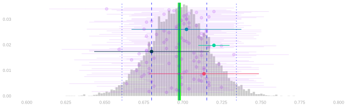
- You’d have seen that your interval was miscalibrated if you knew what you do now.
- Your competitors’ point estimates, which they got exactly like you got yours.
- Who actually turned out, so you could simulate even more polls if you wanted to.
- You’d have drawn ± 1% intervals around all these point estimates.1
- And noticed that many but not most of these intervals cover the target. About 43% do.
- Or, if leaving the target out of it, that only 43% of them cover the mean of all these estimates.
- Same thing. The mean and target are right on top of one another. Like this: |.
- And you’d have known how to choose the right interval width. One that makes 95% of these intervals cover. Right?
Question
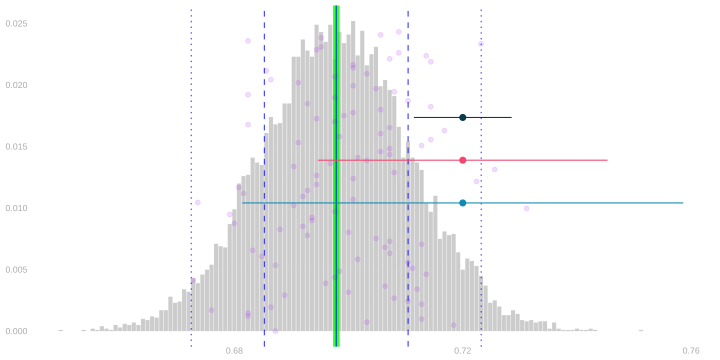
- I’ve drawn the sampling distribution of an estimator, 100 draws from it as ●s, and 3 interval estimates.
- One of these interval estimates is calibrated to have exactly 95% coverage. Which is it?
- A. The one around the ● on top.
- B. The one around the ● in the middle.
- C. The one around the ● on the bottom.
- Hint. You can reach your twin with your arms if your twin can reach you with theirs.
- Hint. Maybe you look like this ● and your twin like this |.
Calibration in Reality
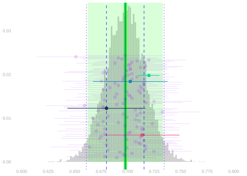
- But you didn’t know any of this. You just knew your own point estimate.
- Without all that post-election information, you didn’t know how to calibrate an interval estimate.
- But everyone else did. Their widths were almost the same as the width you’d choose now.
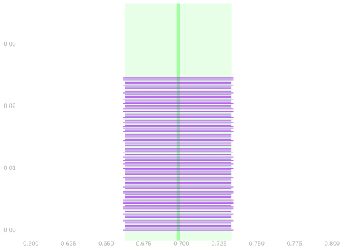
- They didn’t know the point estimator’s actual sampling distribution…
- … but they knew enough about it to choose the right interval width.
- That’s what we’re going to look into now. Over the course of this lecture and the next, we’ll work out what the sampling distributon of our estimator can look like and how what it does look like depends on the population.
- And we’ll see how to use that information to calibrate our intervals.
Probability Review
Sampling Distributions of Sums of Binary Random Variables
This’ll be a slog. I’ll explain why we’ve bothered when we get to the end.
Warm-up: Card Probabilities
- A deck of cards. A standard deck has 52 cards.
- If we shuffle well and draw one card, each of the 52 cards is equally likely.
- That’s our starting point: equally likely configurations.
You draw one card from a well-shuffled deck.
- What is the probability of drawing a heart?
- What is the probability of drawing a 5?
- What is the probability of drawing a face card (J, Q, or K)?
Each of the 52 cards is equally likely, so we just count.
- There are 13 hearts, so \(P(\text{heart}) = 13/52 = 1/4\).
- There are 4 fives (one per suit), so \(P(\text{five}) = 4/52 = 1/13\).
- There are 12 face cards (3 per suit \(\times\) 4 suits), so \(P(\text{face card}) = 12/52 = 3/13\).
Two Cards with Replacement
- Now suppose we draw two cards with replacement.
- We draw one, note it, put it back, shuffle, and draw again.
- Each draw is equally likely to be any of the 52 cards.
- So there are \(52 \times 52 = 2704\) equally likely pairs.
You draw two cards with replacement from a well-shuffled deck.
- What is the probability that both cards are hearts?
- What is the probability that both cards have the same suit?
- What is the probability of drawing a pair (two cards of the same rank)?
We count configurations.
- There are \(13 \times 13 = 169\) ways to draw two hearts, so \(P(\text{both hearts}) = 169/2704 = 1/16\).
- There are 4 suits, and for each suit there are \(13 \times 13 = 169\) ways to draw two cards from that suit. So there are \(4 \times 169 = 676\) same-suit pairs, giving \(P(\text{same suit}) = 676/2704 = 1/4\).
- There are 13 ranks. For each rank, there are \(4 \times 4 = 16\) ways to draw two cards of that rank (4 choices for the first card’s suit, 4 for the second). So there are \(13 \times 16 = 208\) pairs, giving \(P(\text{pair}) = 208/2704 = 1/13\).
Thinking about Marginalization
- Notice what we did in the ‘same suit’ calculation.
- We could have listed all 2704 pairs and counted which ones had matching suits.
- Instead, we grouped them: 676 pairs have matching suits (169 for each of the 4 suits), and the rest don’t.
- This grouping — summing probabilities over configurations that share some property — is marginalization.
- We’ll use it constantly.
- Now let’s apply this same machinery — equally likely configurations, counting, marginalization — to the polling problem.
Starting Simple
| \(j\) | name |
|---|---|
| \(1\) | Rush |
| \(2\) | Mitt |
| \(3\) | Al |

- Let’s start with the distribution of \(Y_1\), the response to one call, when we sample with replacement.
- And to keep things concrete, let’s suppose we’re polling a population of size \(m=3\). We’re rolling a 3-sided die.1
- You can see the population’s responses in above in two formats: a table and a plot.
- We have two Nos (0s) and one Yes (1).
- You could say the ‘Yes’ frequency in the population \(\theta_1 = 1/3\).
- We’ll walk through the process of finding the distribution of \(Y_1\).
Finding the Distribution of \(Y_1\) in a Small Population
| \(j\) | name | \(y_j\) |
|---|---|---|
| \(1\) | Rush | \(0\) |
| \(2\) | Mitt | \(0\) |
| \(3\) | Al | \(1\) |
| \(p\) | \(J_1\) | \(Y_1\) |
|---|---|---|
| \(\frac13\) | \(1\) | \(0\) |
| \(\frac13\) | \(2\) | \(0\) |
| \(\frac13\) | \(3\) | \(1\) |
| \(p\) | \(J_1\) | \(Y_1\) |
|---|---|---|
| \(\frac13\) | \(\color{\) | \(0\) |
| \(\frac13\) | \(\color{\) | \(0\) |
| \(\frac13\) | \(\color{\) | \(1\) |
| \(p\) | \(\color{\) | \(Y_1\) |
|---|---|---|
| \(\color{#EF476F}\frac13\) | \(\color{\) | \(\color{#EF476F}0\) |
| \(\color{#EF476F}\frac13\) | \(\color{\) | \(\color{#EF476F}0\) |
| \(\color{\) | \(\color{\) | \(\color{\) |
| \(p\) | \(Y_1\) |
|---|---|
| \(\frac23\) | \(\color{#EF476F}0\) |
| \(\frac13\) | \(\color{\) |
| \(p\) | \(Y_1\) |
|---|---|
| \(\color{#EF476F}\frac23\) | \(\color{#EF476F}0\) |
| \(\color{\) | \(\color{\) |
- We write the probability distribution of our die roll in a table.
- It has two columns: one for the roll \(J_1\) and another for its probability \(p\)
- It has \(m=3\) rows, one for each possible outcome of the roll.
- Each roll is equally likely, so the probability in each from is \(1/3\)
- We add a column for the response to our call, \(Y_1\).
- Adding this row is ‘free’—it doesn’t change the row’s propability—because what we hear is determined by the roll.
- E.g. if we roll a 1, we’re going to hear Mitt say ‘Yes’.
- So the probability we roll a 1 and hear a ‘Yes’ is the same as the probability we roll a 1.
- E.g. if we roll a 1, we’re going to hear Mitt say ‘Yes’.
- We marginalize over rolls to find the distribution of our call’s outcome.
- We can color each row according to the call’s outcome \(Y_1\), then sum the probabilities in each color.
- The probability of hearing ‘Yes’ is the probability that we roll a 1 or 2: \(1/3+1/3 = 2/3\).
- The probability of hearing ‘No’ is the probability that we roll a 3: \(1/3\).
- These probabilities match the frequencies of ‘Yes’ and ‘No’ in our population.
Generalizing to Larger Populations
- Is this probabilities-match-frequencies phenomenon a fluke? Or is it a general rule?
- To find out, we’ll work through the same steps in abstract, i.e. for a binary population \(y_1 \ldots y_m\) of arbitrary size \(m\).
- To ground us while we do it, we’ll think about our population of \(m=7.23M\) registered voters in Georgia.
- But we’ll handle the general case. Plugging in 7.23M ones and zeros wouldn’t exactly make things easier.
Finding the Distribution of \(Y_1\) in a Large Population
The Population
| \(j\) | \(y_j\) |
|---|---|
| \(1\) | 1 |
| \(2\) | 1 |
| \(3\) | 1 |
| \(4\) | 0 |
| ⋮ | ⋮ |
| \(m\) | 1 |
The Joint
| \(p\) | \(J_1\) | \(Y_1\) |
|---|---|---|
| \(1/m\) | \(1\) | \(1\) |
| \(1/m\) | \(2\) | \(1\) |
| \(1/m\) | \(3\) | \(1\) |
| \(1/m\) | \(4\) | \(0\) |
| ⋮ | ⋮ | ⋮ |
| \(1/m\) | \(m\) | \(1\) |
The Marginal
| \(p\) | \(Y_1\) |
|---|---|
| \(\underset{\color{gray}\approx 0.30}{\sum\limits_{j:y_j=0} \frac{1}{m}}\) | \(0\) |
| \(\underset{\color{gray}\approx 0.70}{\sum\limits_{j:y_j=1} \frac{1}{m}}\) | \(1\) |
Generalizing to Larger Populations
- We start by writing the probability distribution of our dice rolls.
- The person we call, \(J_1\), is equally likely to be anyone in the population of \(m \approx 7.23M\) people.
- It takes on each value \(1 \ldots m\) with probability \(1/m\).
- We add a column for the response to our call, \(Y_1\).
- This is ‘for free’. The roll determines what we hear, so the probabilities don’t change. Still \(1/m\).
- And we marginalize to find the distribution of \(Y_1\).
- We sum the probabilities in rows where \(Y_1=0\) and \(Y_1=1\).
- What we saw in our small population does generalize.
- The probability of hearing a response \(y \in \{0,1\}\) is the frequency of that response in the population.
- We’ll call these frequencies \(\theta_0\) and \(\theta_1\). This is a little redundant because \(\theta_0 = 1 - \theta_1\).
- Our estimation target is just the ‘Yes’ frequency \(\theta_1\). Some people call it the success rate.
- To find the distribtion of a sum of \(Y_1+Y_2\), we can follow the same steps.
- There’s a bit more too it, so we’ll break down the marginalization step to make it a little more tractable.
Exercise: Two Calls to A Small Population
| \(j\) | name | \(y_j\) |
|---|---|---|
| \(1\) | Rush | \(0\) |
| \(2\) | Mitt | \(0\) |
| \(3\) | Al | \(1\) |
- Make a table for the joint distribution of three rolls of a 3-sided die. Add columns for the responses.
- Partially marginalize to get the joint distribution of the responses. Add a column for their sum.
- Marginalize to get the distribution of the sum.
Aren’t you happy that, even though you can’t make a 3-sided die, I didn’t ask you to use 4-sided one?
| \(p\) | \(J_1\) | \(J_2\) | \(Y_1\) | \(Y_2\) |
|---|---|---|---|---|
| \(\color{#EF476F}1/9\) | \(1\) | \(1\) | \(0\) | \(0\) |
| \(\color{#EF476F}1/9\) | \(1\) | \(2\) | \(0\) | \(0\) |
| \(\color{\) | \(1\) | \(3\) | \(0\) | \(1\) |
| \(\color{#EF476F}1/9\) | \(2\) | \(1\) | \(0\) | \(0\) |
| \(\color{#EF476F}1/9\) | \(2\) | \(2\) | \(0\) | \(0\) |
| \(\color{\) | \(2\) | \(3\) | \(0\) | \(1\) |
| \(\color{\) | \(3\) | \(1\) | \(1\) | \(0\) |
| \(\color{\) | \(3\) | \(2\) | \(1\) | \(0\) |
| \(\color{\) | \(3\) | \(3\) | \(1\) | \(1\) |
| \(p\) | \(Y_1\) | \(Y_2\) | \(Y_1 + Y_2\) |
|---|---|---|---|
| \(\color{#EF476F}\frac{4}{9}\) | \(0\) | \(0\) | \(0\) |
| \(\color{\) | \(0\) | \(1\) | \(1\) |
| \(\color{\) | \(1\) | \(0\) | \(1\) |
| \(\color{\) | \(1\) | \(1\) | \(2\) |
| \(p\) | \(Y_1 + Y_2\) |
|---|---|
| \(\color{#EF476F}\frac{4}{9}\) | \(0\) |
| \(\color{\) | \(1\) |
| \(\color{\) | \(2\) |
From Sampling to Coin Flip Sums: Two Responses
The Joint
| \(p\) | \(J_1\) | \(J_2\) | \(Y_1\) | \(Y_2\) | \(Y_1 + Y_2\) |
|---|---|---|---|---|---|
| \(\frac{1}{m^2}\) | \(1\) | \(1\) | \(y_1\) | \(y_1\) | \(y_1+y_1\) |
| \(\frac{1}{m^2}\) | \(1\) | \(2\) | \(y_1\) | \(y_2\) | \(y_1+y_2\) |
| ⋮ | ⋮ | ⋮ | ⋮ | ⋮ | |
| \(\frac{1}{m^2}\) | \(1\) | \(m\) | \(y_1\) | \(y_m\) | \(y_1+y_m\) |
| \(\frac{1}{m^2}\) | \(2\) | \(1\) | \(y_2\) | \(y_1\) | \(y_2+y_1\) |
| \(\frac{1}{m^2}\) | \(2\) | \(2\) | \(y_2\) | \(y_2\) | \(y_2+y_2\) |
| ⋮ | ⋮ | ⋮ | ⋮ | ⋮ | |
| \(\frac{1}{m^2}\) | \(m\) | \(m\) | \(y_m\) | \(y_m\) | \(y_m+y_m\) |
Partially Marginalized
| \(p\) | \(Y_1\) | \(Y_2\) | \(Y_1 + Y_2\) |
|---|---|---|---|
| \(\textcolor[RGB]{239,71,111}{\sum\limits_{\substack{j_1,j_2 \\ y_{j_1},y_{j_2} = 0,0}} \frac{1}{m^2}}\) | \(0\) | \(0\) | \(\textcolor[RGB]{239,71,111}{0}\) |
| \(\textcolor[RGB]{17,138,178}{\sum\limits_{\substack{j_1,j_2 \\ y_{j_1},y_{j_2} = 0,1}} \frac{1}{m^2}}\) | \(0\) | \(1\) | \(\textcolor[RGB]{17,138,178}{1}\) |
| \(\textcolor[RGB]{17,138,178}{\sum\limits_{\substack{j_1,j_2 \\ y_{j_1},y_{j_2} = 1,0}} \frac{1}{m^2}}\) | \(1\) | \(0\) | \(\textcolor[RGB]{17,138,178}{1}\) |
| \(\textcolor[RGB]{6,214,160}{\sum\limits_{\substack{j_1,j_2 \\ y_{j_1},y_{j_2} = 1,1}} \frac{1}{m^2}}\) | \(1\) | \(1\) | \(\textcolor[RGB]{6,214,160}{2}\) |
Fully Marginalized
| \(p\) | \(Y_1 + Y_2\) |
|---|---|
| \(\textcolor[RGB]{239,71,111}{\sum\limits_{\substack{j_1,j_2 \\ y_{j_1}+y_{j_2} = 0}} \frac{1}{m^2}}\) | \(\textcolor[RGB]{239,71,111}{0}\) |
| \(\textcolor[RGB]{17,138,178}{\sum\limits_{\substack{j_1,j_2 \\ y_{j_1}+y_{j_2} = 1}} \frac{1}{m^2}}\) | \(\textcolor[RGB]{17,138,178}{1}\) |
| \(\textcolor[RGB]{6,214,160}{\sum\limits_{\substack{j_1,j_2 \\ y_{j_1}+y_{j_2} = 2}} \frac{1}{m^2}}\) | \(\textcolor[RGB]{6,214,160}{2}\) |
To find the distribution of a sum of two responses, \(Y_1+Y_2\), we do the same thing.
We start with the joint distribution of two dice rolls.
- Our rolls are equally likely to be any pair of numbers in \(1\ldots m\).
- And there are \(m^2\) pairs, so the probability is \(1/m^2\) for each pair.
Then we add columns that are functions of the rolls: \(Y_1\), \(Y_2\), and \(Y_1+Y_2\).
- This is ‘for free’ as before.
- If we know who we’re calling, we know the responses we’ll hear and their sum.
Then we marginalize to find the distribution of the sum. We’ll do this in two steps.
- We partially marginalize over \(J_1,J_2\), to find the joint distribution of the response sequence \(Y_1, Y_2\).
- We fully marginalize the result to find the distribution of \(Y_1+Y_2\).
- To sum over pairs of responses, we sum over one response then the other.
- This exactly like what we did for one response. Except twice.
- And what we get is pretty similar too.
- The probability of observing the pair of responses is determined by their frequencies in the population.
- It’s the product of the frequences of those responses.
- For ‘Yes,Yes’ it’s \(\theta_1^2\). For ‘No,No’ it’s \(\theta_0^2\).
- And for ‘Yes,No’ and ‘No,Yes’ it’s \(\theta_1\theta_0\).
- This is, for what it’s worth, the product of the marginal probabilities of those responses.
- When this happens for any pair of random variables, we say they are independent. More on that soon.
- And the probability of any response pair \(a,b\) depends only on its sum \(a+b\).
\[ \begin{aligned} \sum\limits_{\substack{j_1,j_2\\ y_{j_1},y_{j_2} = a,b}} \frac{1}{m^2} &= \sum\limits_{\substack{j_1 \\ y_{j_1}=a}} \left\{ * \right\}{ \sum\limits_{\substack{j_2 \\ y_{j_2}=b}} \frac{1}{m^2} } \\ &= \sum\limits_{\substack{j_1 \\ y_{j_1}=a}} \left\{ * \right\}{ m_b \times \frac{1}{m^2} } \qfor m_y = \sum\limits_{j:y_j=y} 1 \\ &= m_a \times m_b \times \frac{1}{m^2} = \theta_a \times \theta_b \qfor \theta_y = \frac{m_y}{m} \\ &= \theta_1^{s} \theta_0^{1-s} \qfor s = a+b \end{aligned} \]
- To calculate the marginal probability that \(Y_1+Y_2=s\), we sum the probabilities of all pairs with that sum.
- This is pretty easy because there aren’t too many pairs.
- And I’ve color coded the pairs to make it even easier.
From Sampling to Coin Flip Sums: \(n\) Responses.
| \(p\) | \(J_1\) | … | \(J_n\) | \(Y_1\) | … | \(Y_n\) |
|---|---|---|---|---|---|---|
| \(\frac{1}{m^n}\) | \(1\) | … | \(1\) | \(y_1\) | … | \(y_1\) |
| \(\frac{1}{m^n}\) | \(1\) | … | \(2\) | \(y_1\) | … | \(y_2\) |
| ⋮ | ⋮ | ⋱ | ⋮ | ⋮ | ⋱ | ⋮ |
| \(\frac{1}{m^n}\) | \(1\) | … | \(m\) | \(y_1\) | … | \(y_m\) |
| \(\frac{1}{m^n}\) | \(2\) | … | \(1\) | \(y_2\) | … | \(y_1\) |
| \(\frac{1}{m^n}\) | \(2\) | … | \(2\) | \(y_2\) | … | \(y_2\) |
| ⋮ | ⋮ | ⋱ | ⋮ | ⋮ | ⋱ | ⋮ |
| \(\frac{1}{m^n}\) | \(m\) | … | \(m\) | \(y_m\) | … | \(y_m\) |
| \(p\) | \(Y_1 + \ldots + Y_n\) |
|---|---|
| \(\color{#EF476F}\sum\limits_{\substack{a_1 \ldots a_n \\ a_1 + \ldots + a_n = 0}} \sum\limits_{\substack{j_1 \ldots j_n \\ y_{j_1} \ldots y_{j_n} = a_1 \ldots a_n}} \frac{1}{m^n}\) | \(\color{#EF476F}0\) |
| \(\color{\) | \(\color{\) |
| ⋮ | ⋮ |
| \(\color{\) | \(\color{\) |
| \(\color{#FFD166}\sum\limits_{\substack{a_1 \ldots a_n \\ a_1 + \ldots + a_n = n}} \sum\limits_{\substack{j_1 \ldots j_n \\ y_{j_1} \ldots y_{j_n} = a_1 \ldots a_n}} \frac{1}{m^n}\) | \(\color{#FFD166}n\) |
Partially Marginalized
| \(p\) | \(Y_1\) | \(Y_2\) | … | \(Y_n\) | \(Y_1 + \ldots + Y_n\) |
|---|---|---|---|---|---|
| \(\color{#EF476F}\sum\limits_{\substack{j_1 \ldots j_n \\ y_{j_1}, y_{j_2} \ldots y_{j_n} = 0, 0 \ldots 0}} \frac{1}{m^n}\) | 0 | 0 | … | \(0\) | \(\color{#EF476F}0\) |
| \(\color{\) | 0 | 0 | … | \(1\) | \(\color{\) |
| ⋮ | ⋮ | ⋱ | ⋮ | ⋮ | ⋱ |
| \(\color{\) | 0 | 1 | … | \(0\) | \(\color{\) |
| ⋮ | ⋮ | ⋱ | ⋮ | ⋮ | ⋱ |
| \(\color{\) | 0 | 1 | … | \(1\) | \(\color{\) |
| \(\color{#FFD166}\sum\limits_{\substack{j_1 \ldots j_n \\ y_{j_1}, y_{j_2} \ldots y_{j_n} = 1, 1 \ldots 1}} \frac{1}{m^n}\) | 1 | 1 | … | \(1\) | \(\color{#FFD166}n\) |
To find the distribution of a sum \(Y_1 + \ldots + Y_n\), we do the same thing.
We start by writing out the joint distribution of \(n\) dice rolls.
- We’re equally likely to roll any sequence of \(n\) numbers in \(1\ldots m\).
- And there are \(m^n\) sequences, so the probability is \(1/m^n\) for each sequence.
- Then we add columns for the corresponding responses ‘for free’. And the sums.
Then we marginalize in two steps.
- Sum over roll sequences leading to the same response sequence \(a_1 \ldots a_n\).
- Sum over response sequences leading to the same sum \(s=a_1+\ldots+a_n\).
This isn’t a class about counting, so this stuff won’t be on the exam.
- To sum over roll sequences, we sum over one roll after another.
- This exactly like what we did for one response. Except over and over.
- You can think of this sum ’inside out.
- Suppose we’re calculating the probability of the response sequence \(a_1 \ldots a_n = 0,0,...,0,0\).
- We consider any ‘head’ \(j_1\ldots j_{n-1}\) where \(y_{j_1} \ldots y_{j_{n-1}}=0,0,...0\) and think about choosing the last element. No matter what the head is, there are \(m_0\) ways to complete with by choosing \(j_{n}\) with \(y_{j_n}=0\).
- We repeat with shortened ‘head’ \(j_1 \ldots j_{n-2}\) to consider the choice of \(j_{n-1}\). We have \(m_0\) choices and our last step tells us that each choice results in \(m_0\) call sequences, so there are \(m_0^2\) sequences with head \(j_1 \ldots j_{n-2}\) ending in \(0,0\).
- Repeat \(n-2\) more times.
- What we get is pretty similar to the two-response case.
- The probability of observing the sequence is determined by the frequency of Yeses and Nos in the population.
- It’s the product of the frequences of those responses.
- For ‘Yes,Yes,…,Yes’ it’s \(\theta_1^n\). For ‘No,No,…,No’ it’s \(\theta_0^n\).
- And if we have \(s\) Yeses and therefore \(n-s\) Nos, it’s \(\theta_1^s\theta_0^{n-s}\).
- This is, again, the product of the marginal probabilities of those \(n\) responses.
\[ \begin{aligned} \sum_{\substack{j_1 \ldots j_n \\ y_{j_1} \ldots y_{j_n} = a_1 \ldots a_n}} \frac{1}{m^n} &= \sum_{\substack{j_1 \ldots j_{n-1} \\ y_{j_1} \ldots y_{j_{n-1}} = a_1 \ldots a_{n-1}}} \sum_{\substack{j_n \\ y_n=a_n}} \frac{1}{m^n} \\ &= \sum_{\substack{j_1 \ldots j_{n-1} \\ y_{j_1} \ldots y_{j_{n-1}} = a_1 \ldots a_{n-1}}} \sum_{\substack{j_n \\ y_n=a_n}} m_{a_n} \times \frac{1}{m^n} \\ &= \sum_{\substack{j_1 \ldots j_{n-2} \\ y_{j_1} \ldots y_{j_{n-2}} = a_1 \ldots a_{n-2}}} \sum_{\substack{j_{n-1} \\ y_n=a_{n-1}}} m_{a_n} \times \frac{1}{m^n} \\ &= \sum_{\substack{j_1 \ldots j_{n-2} \\ y_{j_1} \ldots y_{j_{n-2}} = a_1 \ldots a_{n-2}}} \sum_{\substack{j_{n-1} \\ y_n=a_{n-1}}} m_{a_{n-1}} m_{a_n} \times \frac{1}{m^n} \\ &= m_{a_1} \ldots m_{a_{n}} \times \frac{1}{m^n} \qqtext{after repeating $n-2$ more times} \\ &= \theta_{a_i} \ldots \theta_{a_n} \\ &= \prod_{i:a_i=1} \theta_1 \prod_{i:a_i=0} \theta_0 = \theta_1^{s} \theta_0^{n-s} \qfor s = a_1 + \ldots + a_n \end{aligned} \]
- The full marginalization step is a bit trickier. But we can take advantage of our partial marginalization.
- To calculate the probability that the sum takes on the value \(s\), we order our sum of probabilities thoughtfully.
- We sum the over response sequences \(a_1 \ldots a_n\) with \(s\) Yeses and \(n-s\) Nos.
- And within that, sum over calls where we’d hear those responses.
- The inner sum we’ve done. That was our partial marginalization.
- And the outer sum boils down to counting the number of sequences with \(s\) Yeses.
- The probability of all these sequences is the same: \(\theta_1^s\theta_0^{n-s}\). So summing is counting and multiplying.
- You may have done the counting part in high school in a unit on ‘permutations and combinations’.
- In any case, that count has a name. It’s spoken ‘\(n\) choose \(s\)’ and written \(\binom{n}{s}\).
\[ \begin{aligned} \sum\limits_{\substack{j_1 \ldots j_n \\ y_{j_1} + \ldots + y_{j_n} = s}} \frac{1}{m^n} &= \sum\limits_{\substack{a_1 \dots a_n \\ a_1 + \ldots + a_n = s}} \ \ \sum_{\substack{j_1 \ldots j_n \\ y_{j_1} \ldots y_{j_n} = a_1 \ldots a_n}} \frac{1}{m^n} \\ & =\sum\limits_{\substack{a_1 \dots a_n \\ a_1 + \ldots + a_n = s}} \theta_1^{s}\theta_0^{n-s} \\ &= \binom{n}{s} \theta_1^{s} \theta_0^{n-s} \qqtext{ where } \binom{n}{s} = \sum\limits_{\substack{a_1 \dots a_n \\ a_1 + \ldots + a_n = s}} 1 \end{aligned} \]
\[ P\p*{\sum_{i=1}^n Y_i = s} = \binom{n}{s} \theta_1^{s}\theta_0^{n-s} \ \ \text{ where } \ \ \binom{n}{s} \text{ is the number of binary sequences $a_1 \ldots a_n$ summing to $s$.} \]
- We don’t actually have to do all this sequence-summing-to-\(s\) counting ourselves.
- The
choosefunction in R will do it for us: \(\binom{n}{s}\) ischoose(n,s). - The
dbinomfunction will give us the whole probability: \(\binom{n}{s}\theta_1^s\theta_0^{n-s}\) isdbinom(s, n, theta_1). - The
rbinomfunction will draw samples from this distribution:rbinom(10000, n, theta_1)gives us 10,000.
The Binomial Distribution

\[ \begin{aligned} &\overset{\color{gray}=P\p*{\frac{1}{n}\sum_{i=1}^n Y_i = \frac{s}{n}}}{P\p*{\sum_{i=1}^n Y_i = s}} = \binom{n}{s} \theta_1^{s}\theta_0^{n-s} \\ &\qfor n =625 \\ &\qand \theta_1 \in \{\textcolor[RGB]{239,71,111}{0.68}, \textcolor[RGB]{17,138,178}{0.7}, \textcolor[RGB]{6,214,160}{0.72} \} \end{aligned} \]
- These functions have ‘binom’ in their name because we call this distribution the Binomial distribution.
- The Binomial distribution on \(n\) trials with success probability \(\theta\) is our name for …
- the distribution of the sum of \(n\) independent binary random variables with probability \(\theta\) of being \(1\).
- E.g. the number of heads in \(n\) coin flips is Binomial with \(n\) trials and success probability \(1/2\).
- We’ve shown that’s the sampling distribution of the sum of responses, \(Y_1 + \ldots + Y_n\), when we sample …
- … with replacement from a population of binary responses \(y_1 \ldots y_m\) in which \(\theta\) is the frequency of ones.
- We’re interested in the mean of responses, so we divide by \(n\): \(\color{gray} \sum_{i=1}^n Y_i = s \ \text{ when } \ \frac{1}{n}\sum_{i=1}^n Y_i = s/n\).
- It’s easy to estimate — and talk about estimating — this sampling distribution.
- It depends only on one thing we don’t know — the population frequency \(\theta\).
- And that’s exactly the thing we’re trying to estimate anyway.
- That’s why we’ve started here—the case of sampling with replacement from a population of binary responses.
Payoff
To estimate this sampling distribution, you plug your point estimate \(\hat\theta\) into the Binomial formula. \[ \hat P\p*{\sum_{i=1}^n Y_i = s} = \binom{n}{s} \hat\theta^{s} (1-\hat\theta)^{n-s} \qqtext{ estimates } P\p*{\sum_{i=1}^n Y_i = s} = \binom{n}{s} \theta^{s} (1-\theta)^{n-s} \]
To calibrate your interval estimate, you …
- use
rbinomto draw 10,000 samples from this estimate of the sampling distribution. - Even remembering to divide by \(n\).
- And use the function
widthfrom the Week 1 Homework to find an interval that covers 95% of them.
- use
- You nail it. Your interval covers the estimation target \(\theta\) just like 95% of your competitors’ do.
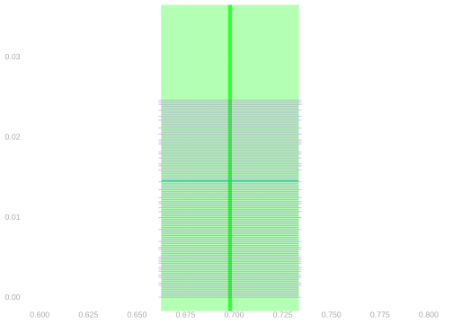
- It’s not just that you’ve widened your interval enough.
- You’ve widened it almost exactly the right amount.
- Just like your competitors. Almost as if you all knew …
- how to estimate your estimator’s sampling distribution.
Sampling without Replacement
Another Example. This won’t be on the Exam.
Warm-up: Card Probabilities without Replacement
- Now let’s revisit the card problems, but this time drawing without replacement.
- We don’t put cards back after drawing them.
- When we draw two cards without replacement, there are \(52 \times 51 = 2652\) equally likely ordered pairs.
- 52 choices for the first card, then 51 remaining choices for the second.
You draw two cards without replacement from a well-shuffled deck.
- What is the probability that both cards are hearts?
- What is the probability of drawing a pair (two cards of the same rank)?
- There are 13 hearts. For the first card, 13 choices. For the second, 12 remaining hearts. So there are \(13 \times 12 = 156\) ways to draw two hearts, giving \(P(\text{both hearts}) = 156/2652 = 1/17\).
- Compare to with replacement: \(1/16\). Drawing without replacement makes two hearts slightly less likely because we’ve ‘used up’ one heart.
- There are 13 ranks. For each rank, there are \(4 \times 3 = 12\) ways to draw two cards of that rank (4 choices for the first card’s suit, 3 remaining for the second). So there are \(13 \times 12 = 156\) pairs, giving \(P(\text{pair}) = 156/2652 = 1/17\).
- Compare to with replacement: \(1/13\). Pairs are less likely without replacement because we can’t draw the exact same card twice.
The Pattern
- Notice what’s different.
- With replacement, drawing a heart doesn’t change the probability that the next card is a heart — it’s still \(13/52 = 1/4\).
- Without replacement, drawing a heart does change things.
- Now there are only 12 hearts among 51 remaining cards, so the probability is \(12/51\), slightly less than \(1/4\).
- This ‘using up’ of options is what makes without-replacement calculations more involved.
- Let’s see how it plays out in the polling context.
Marginalization
| \(p\) | \(J_1\) | … | \(J_n\) | \(Y_1\) | … | \(Y_n\) |
|---|---|---|---|---|---|---|
| \(\frac{m-n!}{m!}\) | \(1\) | … | \(1\) | \(y_1\) | … | \(y_1\) |
| \(\frac{m-n!}{m!}\) | \(1\) | … | \(2\) | \(y_1\) | … | \(y_2\) |
| ⋮ | ⋮ | ⋱ | ⋮ | ⋮ | ⋱ | ⋮ |
| \(\frac{m-n!}{m!}\) | \(1\) | … | \(m\) | \(y_1\) | … | \(y_m\) |
| \(\frac{m-n!}{m!}\) | \(2\) | … | \(1\) | \(y_2\) | … | \(y_1\) |
| \(\frac{m-n!}{m!}\) | \(2\) | … | \(2\) | \(y_2\) | … | \(y_2\) |
| ⋮ | ⋮ | ⋱ | ⋮ | ⋮ | ⋱ | ⋮ |
| \(\frac{m-n!}{m!}\) | \(m\) | … | \(m\) | \(y_m\) | … | \(y_m\) |
| \(p\) | \(Y_1 + \ldots + Y_n\) |
|---|---|
| \(\color{#EF476F}\sum\limits_{\substack{a_1 \ldots a_n \\ a_1 + \ldots + a_n = 0}} \sum\limits_{\substack{j_1 \neq \ldots \neq j_n \\ y_{j_1} \ldots y_{j_n} = a_1 \ldots a_n}} \frac{m-n!}{m!}\) | \(\color{#EF476F}0\) |
| \(\color{\) | \(\color{\) |
| ⋮ | ⋮ |
| \(\color{\) | \(\color{\) |
| \(\color{#FFD166}\sum\limits_{\substack{a_1 \ldots a_n \\ a_1 + \ldots + a_n = n}} \sum\limits_{\substack{j_1 \neq \ldots \neq j_n \\ y_{j_1} \ldots y_{j_n} = a_1 \ldots a_n}} \frac{m-n!}{m!}\) | \(\color{#FFD166}n\) |
Partially Marginalized
| \(p\) | \(Y_1\) | \(Y_2\) | … | \(Y_n\) | \(Y_1 + \ldots + Y_n\) |
|---|---|---|---|---|---|
| \(\color{#EF476F}\sum\limits_{\substack{j_1 \neq \ldots \neq j_n \\ y_{j_1}, y_{j_2} \ldots y_{j_n} = 0, 0 \ldots 0}} \frac{m-n!}{m!}\) | 0 | 0 | … | \(0\) | \(\color{#EF476F}0\) |
| \(\color{\) | 0 | 0 | … | \(1\) | \(\color{\) |
| ⋮ | ⋮ | ⋱ | ⋮ | ⋮ | ⋱ |
| \(\color{\) | 0 | 1 | … | \(0\) | \(\color{\) |
| ⋮ | ⋮ | ⋱ | ⋮ | ⋮ | ⋱ |
| \(\color{\) | 0 | 1 | … | \(1\) | \(\color{\) |
| \(\color{#FFD166}\sum\limits_{\substack{j_1 \neq \ldots \neq j_n \\ y_{j_1}, y_{j_2} \ldots y_{j_n} = 1, 1 \ldots 1}} \frac{m-n!}{m!}\) | 1 | 1 | … | \(1\) | \(\color{#FFD166}n\) |
To find the distribution of a sum \(Y_1 + \ldots + Y_n\) when we sample without replacement we do the same thing.
We start by writing out the joint distribution of \(n\) dice rolls.
- We’re equally likely to pull any sequence of \(n\) distinct numbers in \(1\ldots m\).
- There are \(m \times (m-1) \times \ldots \times (m-n+1)=m!/(m-n)!\) sequences…
- … so the probability is \((m-n)!/m!\) for each sequence.
- Then we add the responses and sums as columns. That doesn’t change.
Then we marginalize in two steps.
- Sum over roll sequences leading to the same response sequence \(a_1 \ldots a_n\).
- Sum over response sequences leading to the same sum \(s=a_1+\ldots+a_n\).
- To sum over roll sequences, we sum over one roll after another.
- Suppose we’re calculating the probability of the response sequence \(a_1 \ldots a_n = 0,0,...,0,0\).
- We consider any ‘head’ \(j_1\ldots j_{n-1}\) where \(y_{j_1} \ldots y_{j_{n-1}}=0,0,...0\) and think about choosing the last element. No matter what the head is, we’ve ‘used up’ \(n-1\) people with response \(y_j=0\). So there are \(m_0-(n-1)=m_0-n+1\) ways to complete the sequence by choosing an as-yet unused \(j_{n}\) with \(y_{j_n}=0\).
- We repeat with shortened ‘head’ \(j_1 \ldots j_{n-2}\) to consider the choice of \(j_{n-1}\). We have \(m_0-n+2\) as-yet unused choices and our last step tells us that each choice results in \(m_0-(n-1)\) call sequences, so there are \((m_0 - n + 1)(m_0 - n + 2)\) sequences with head \(j_1 \ldots j_{n-2}\) ending in \(0,0\).
- Repeat \(n-2\) more times. We get \((m_0 - n + 1) \times \ldots \times m_0 = m_0!/(m_0-n)!\) rows.
- When we work through the same argument for sequences with a mix of 0s and 1s, we see that a call in the head forecloses possibilities for later calls with the same response only. Thus, when we have \(s_1\) ones and \(s_0\) zeros, we can think of ourselves as choosing calls resulting with response zero and response one separately. We have \(m_0!/(m_0-s_0)! \times m_1! / (m_1-s_1)!\) rows.
- Multiplying by the probability of each row, we get the probability of a response sequence with \(s_1\) ones.
\[ \frac{m_0!}{(m_0-s_0)!} \times \frac{m_1!}{(m_1-s_1)!} \times \frac{(m-n)!}{m!} \]
- To calculate the probability that the sum takes on the value \(s\), we sum over response sequences with \(s\) ones.
- Just like in the with-replacement case, the probability of all these sequences is the same.
- It depends only on how many ones and zeros are in the sequence, not their order.
- So summing is counting and multiplying.
- And the count is the same as before: the number of binary sequences of length \(n\) with \(s\) ones is \(\binom{n}{s}\).
\[ P\p*{\sum_{i=1}^n Y_i = s} = \binom{n}{s} \times \frac{m_0!}{(m_0-s_0)!} \times \frac{m_1!}{(m_1-s_1)!} \times \frac{(m-n)!}{m!} \qqtext{ for } s_1 = s \qand s_0 = n-s \]
- This is the Hypergeometric distribution. It’s a bit uglier than the Binomial, but the same R tricks work.
- The
dhyperfunction gives us the probability.dhyper(s, m1, m0, n)is \(P\p*{\sum_{i=1}^n Y_i = s}\) when we sample \(n\) times without replacement …- … from a population with \(m_1\) ones and \(m_0\) zeros.
- The
rhyperfunction draws samples:rhyper(10000, m1, m0, n)gives us 10,000.
theta_1 = .7
m = 1000
m1 = m * theta_1
m0 = m * (1-theta_1)
n = 100
p = dhyper(0:n, m1, m0, n)
S = rhyper(10000, m1, m0, n)
ggplot() + geom_area(aes(x=0:n, y=p), color=pollc, alpha=.2) +
geom_bar(aes(x=S, y=after_stat(prop)), alpha=.3) +
geom_point(aes(x=S[1:100], y=max(p)*seq(0,1,length.out=100)),
color='purple', alpha=.2)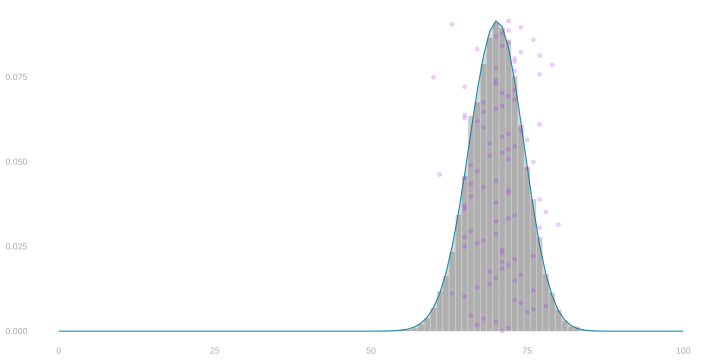
The Hypergeometric Distribution
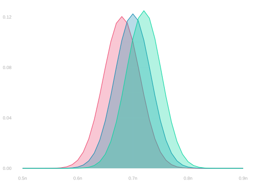
\[ \begin{aligned} &\overset{\color{gray}=P\p*{\frac{1}{n}\sum_{i=1}^n Y_i = \frac{s}{n}}}{P\p*{\sum_{i=1}^n Y_i = s}} = \binom{n}{s} \frac{m_0!}{(m_0-n+s)!} \frac{m_1!}{(m_1-s)!} \frac{(m-n)!}{m!} \\ &\qfor n =100 \qand m = 200 \\ &\qand \theta_1 \in \{\textcolor[RGB]{239,71,111}{0.68}, \textcolor[RGB]{17,138,178}{0.7}, \textcolor[RGB]{6,214,160}{0.72} \} \end{aligned} \]
- These functions have ‘hyper’ in their name because we call this distribution the Hypergeometric distribution.
- It’s the sampling distribution of the sum of responses, \(Y_1 + \ldots + Y_n\), when we sample …
- … without replacement from a population of binary responses \(y_1 \ldots y_m\) in which \(\theta_1\) is the frequency of ones.
- It’s a bit harder to estimate than the Binomial. It depends on two things we don’t know.
- The population size \(m\) and the number of ones \(m_1\).
- We usually know \(m\), though. And if we do, we can estimate \(m_1\) by \(m\hat\theta\) …
- … where \(\hat\theta\) is our sample proportion. That’s usually good enough.
- The Hypergeometric looks a lot like the Binomial when \(n\) is small relative to \(m\).
- That’s because sampling without replacement is almost like sampling with replacement …
- … when you’re unlikely to pick the same person twice anyway.
- When \(n\) is a meaningful fraction of \(m\), the Hypergeometric is narrower.
- You get better precision by not wasting calls on people you’ve already talked to.
Calibration using the Binomial Distribution
Looking Back on Your Success
- Remember your sucessfully calibrated interval estimate from a moment ago?
- You did that by plugging your point estimate \(\hat\theta\) into the Binomial formula.
- And you got a nicely calibrated interval estimate. That was great.
- But let’s take a closer look. Let’s compare your estimate of the sampling distribution to the actual thing.
- We can do that because we have a bunch of draws from the real thing—all the others polls. ●s.
- And if we want more draws, since it’s after the election, we can simulate as many polls as we want.
- It doesn’t look great. It’s off center.
- Its mean is a bit higher than the population proportion \(\theta\).
- It’s actually our sample proportion \(\hat\theta\). That makes sense.
- The mean of the Binomial distribution with success rate \(\theta\) is \(\theta\) and we’re using \(\hat\theta\) in its place.
- It turns out that this doesn’t matter much. It worked just fine for calibration. Why?
Calibration Comparison
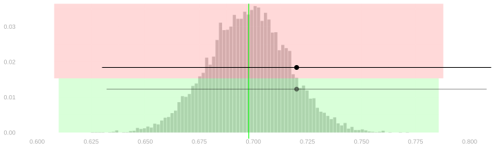
- It doesn’t matter because we’re not putting arms on draws from the estimated sampling distribution.
- We’re putting arms on our point estimate1, which is a draw from the actual sampling distribution.
- To do this, we’re using the width—but not the center—of the estimated sampling distribution.
- And it works because that’s very close to the width we’d get from the actual sampling distribution.
- Above, I’ve drawn in shaded regions corresponding to two versions of the the population proportion’s arms.
- The green region is the one we get from the actual sampling distribution. We can’t use this.
- The red region is the one we get from the estimated sampling distribution. We do use this.
- And I’ve drawn in a version of our interval estimate calibrated each way. They’re almost the same.
Our Competitors’ Calibration
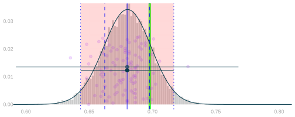
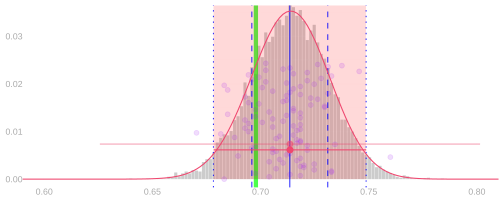
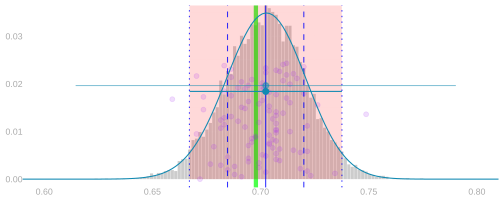
- Our competitors’ sampling distributions, just like ours, are centered on their sample frequencies \(\hat\theta\).
- But they’re all close to the width we get using the actual sampling distribution. You can see it above.
- I’ve plotted the intervals they’d use — based on their sampling distribution estimates — in bold colors.
- And the intervals they wish they could — based on the actual sampling distribution — more faintly.
- If you look very closely, you can see that …
- the intervals around overestimates are slightly narrower than we’d want.
- the intervals around underestimates are slightly wider than we’d want.
- But you have to look very closely. They’re all very close to the actual sampling distribution’s width.
All of Our Competitors
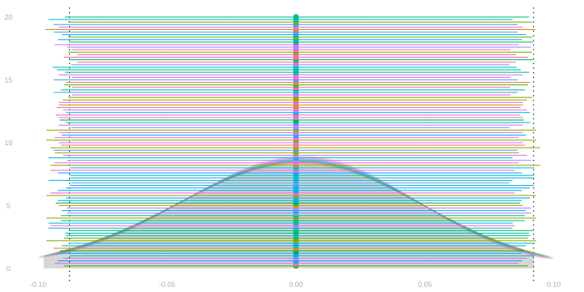
- We saw earlier that all of our competitors had almost-perfectly calibrated intervals.
- They got their widths by plugging their sample frequencies \(\hat\theta\) into the Binomial formula.
- And the result was almost exactly as if they’d plugged in the population frequency \(\theta\) instead.
- Let’s look again. This time, we’ll plot their estimated sampling distributions too.
- But we’ll shift them all so they’re centered at zero.
- That way we can compare their widths more easily. Because width is what matters.
- Each competitor gets their own color and we see their …
- centered sampling distribution plotted as a line
- centered interval estimate as a point with arms
- Compare to the actual sampling distribution (centered and shaded gray) and its middle 95% (dotted lines).
Why Does it Work?

- Why are we getting a good estimate of the sampling distribution?
- The Binomial distribution is continuous as a function of \(\theta\)—when \(\theta\) changes little, the distribution changes little.
- This means that, if we have a good estimate of \(\theta\), we have a good estimate of the sampling distribution.
- The relevant difference (after centering) is even smaller because the way the binomial changes is mostly location.
- Here I’m showing three estimates of the sampling distribution based on three point estimates \(\hat\theta\).
- with centering (right) and without (left).
- In particular, point estimates at the center and two edges of the actual sampling distribution’s middle 95%.
The Estimate Works. Why Does it Work?

- You can think of this as a sort of ‘confidence interval’ for our estimate of the sampling distribution.
- 95% of the time, you’ll get an estimate somewhere between the red and blue ones.
- And, as a result, the width of your interval estimate will be somewhere between the red and blue widths.
- One way of looking at it is, when calibrate interval estimates this way, they’re almost perfectly calibrated.
- Coverage may not actually be 95% but it’s very close.
- You can see that the red interval does cover.
- So will an interval around any point estimate between it and \(\theta\).
- The blue interval doesn’t cover. It’s a fingernail too narrow.
- But an interval around any estimate a fingernail smaller will cover.
- It’ll be at least as wide and a fingernail closer.
- Another way of looking at it is that 95% of the time, your interval misses by at most a fingernail.
- This, or bit worse, is usually what’s meant when someone says ‘95% interval.’ Don’t expect perfect calibration.